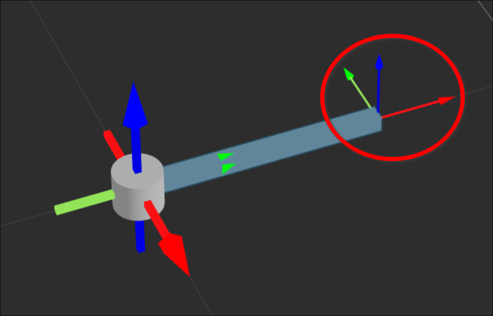
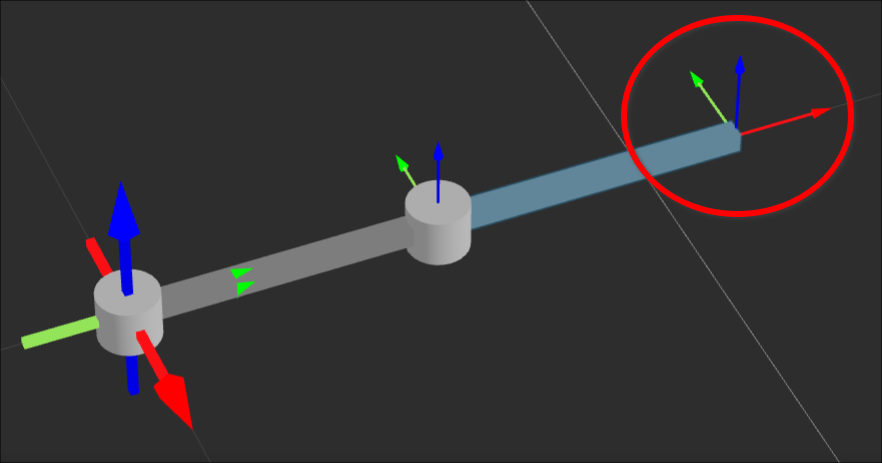
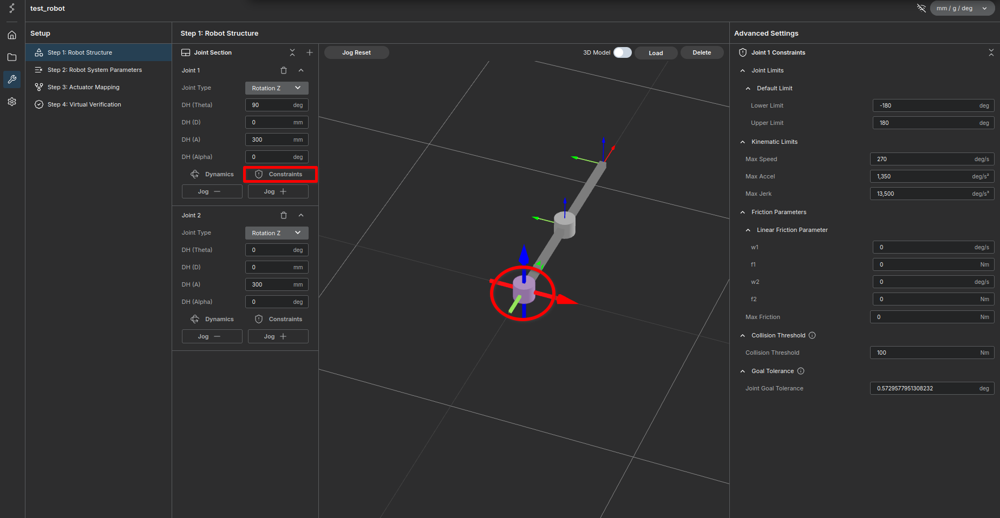
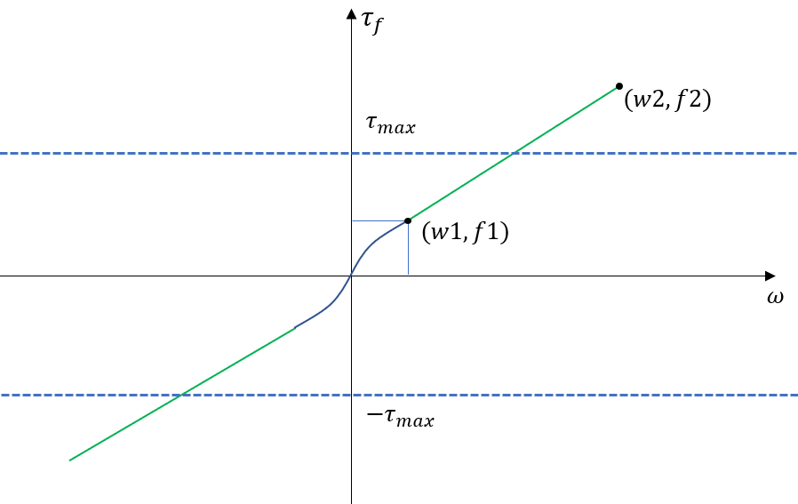

User Guide: Robot Configuration Details
This guide provides in-depth explanations of the parameters and theories used in the Robot Creation tool. It is intended to supplement the basic Tutorial.
1. Dynamics Settings
When configuring Dynamics, you are defining the physical properties of the link connecting the Current Joint Coordinate System to the Next Joint Coordinate System.
Understanding Coordinate Systems
To accurately configure dynamics, you must understand the Output Coordinate System. This refers to the coordinate system advanced by the DH parameters from the current joint.
- Mass & Inertia Reference: All physical properties (Center of Mass, Inertia Tensor) must be defined relative to this Output Coordinate System.
Reference Diagrams:
{kind=link}

{kind=link}

Parameters Detail
1. Mass
- Input the mass of the link physically connecting the current joint to the next.
- Tip: Derive this from your CAD model by measuring the mass between the output stage of the current joint and the output stage of the next.
2. Center of Mass (CoM)
- Reference Frame: The Output Coordinate System (as shown above).
- How to measure: Define a coordinate system in your CAD software (e.g., SolidWorks) matching the Output Coordinate System and measure the CoM relative to it.
3. Rotational Inertia
- Reference Point: The Center of Mass.
- Orientation: Must match the orientation of the Output Coordinate System.
2. Constraints & Safety
The Constraints section handles safety boundaries and physical limitations of the actuators.
{kind=link}

1. Joint Limits
These are software-defined hard stops. If a target position is outside [Lower Limit, Upper Limit], the controller will immediately halt operation to prevent mechanical damage.
2. Kinematic Limits
Defines the maximum motion capabilities.
- Max Speed/Accel/Jerk: Limits applied during motion generation.
- Units:
- Revolute Joints:
deg,deg/s,deg/s² - Prismatic Joints:
mm,mm/s,mm/s²
- Revolute Joints:
Always set these values based on your actuator's specifications (motor curve, gear ratio) to prevent overheating or damage.
3. Friction Parameters
This defines the joint friction model. The friction torque (\(\tau_{friction}\)) is calculated based on joint velocity (\(w\)).
Friction Model Curve:
{kind=link}

- Smooth Transition (
-w1 < w < w1): The curve follows a quadratic function to avoid discontinuities at zero velocity. - Linear Region (
|w| > w1): The friction increases linearly. - Parameters:
w1,f1: Low-speed threshold and corresponding friction.w2,f2: High-speed threshold and corresponding friction.Max Friction: The absolute upper limit of friction torque.
4. Collision Threshold
The sensitivity for collision detection.
- If External Torque > Threshold, the robot triggers a collision error and stops.
- Set this carefully: Too low causes false alarms during fast motion; too high makes the robot unsafe.
5. Goal Tolerance
Determines when a motion command is considered "finished."
- If
|Current Pos - Target Pos| <= Tolerance, the action reports Success.